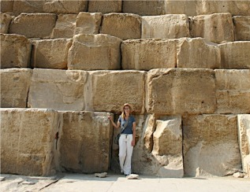
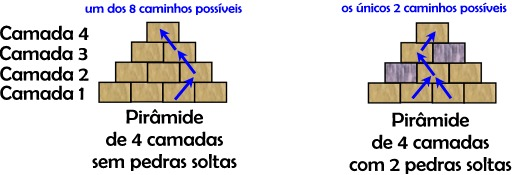

Para efeitos da nota atribuída à resolução de exercícios ao longo do semestre - Submeter até 23:59 de 15 de Novembro
(o problema continuará depois disponível para submissão, mas sem contar para a nota)
[para perceber o contexto do problema deve ler o guião da aula #05]
As pirâmides do Egipto são túmulos. Os faraós que as mandaram construir e os arquitectos que as desenharam, não as prepararam para que os turistas do século XXI se divertissem subindo-as. No entanto, há sempre alguns visitantes mais ousados que ultrapassam as barreiras de segurança e se aventuram a trepar as pirâmides, para chegar lá acima e acenar estupidamente a bandeira do seu país.
Trepar as pirâmides é difícil e perigoso. Cada pirâmide é formada por camadas de pedras. Admitamos que a camada inferior, tem, em cada face, N pedras. A segunda camada, em cima dessa, terá N-1 pedras, cada uma apoiada sobre duas pedras inferiores. Assim, haverá N camadas. Para trepar a pirâmide, cada um destes "alpinistas" de algibeira, começa por subir uma das pedras da base; depois, passa dessa para uma das duas pedras da segunda camada que se apoiam sobre a pedra que ele trepou inicialmente; e assim sucessivamente, até chegar ao topo. Se a pirâmide estivesse em bom estado, com todas as pedras no lugar, haveria 2N-1 "maneiras" diferentes de subir até ao topo, cada maneira correspondendo a um percurso pela pirâmide acima. No entanto, as pirâmides estão bastante degradadas e algumas pedras faltam ou estão tão deterioradas que se torna impossível subir para cima delas, para daí continuar a escalada. Fica assim a questão: nestas condições, quantas maneiras diferentes haverá de trepar a pirâmide até ao topo?

Escreva um programa que dada uma pirâmide com N camadas, e uma descrição das pedras em falta ou muito deterioradas numa das faces da pirâmide, calcule o número de maneiras diferentes de subir a pirâmide até ao topo, começando por uma qualquer das pedras da primeira camada, evitando as pedras que estão em falta ou muito deterioradas.
Na primeira linha vem o número N que representa o número de pedras na primeira camada e também o número de níveis da pirâmide. Na segunda linha vem o número D de pedras em falta ou muito deterioradas. Nas D linhas seguintes vêm dois números, Ci e Pi, que descrevem cada uma destas pedras em falta ou muito deterioradas: C representa a camada (como indicado na figura), e Pi representa a posição da pedra nessa camada (onde 1 é a pedra mais à esquerda, 2 a 2ª pedra mais esquerda, etc).
Uma única linha com indicando M, o número de maneiras diferente de subir a pirâmide.
São garantidos os seguintes limites em todos os casos de teste que irão ser colocados ao programa:
| 1 ≤ N ≤ 1000 | Quantidade de níveis da pirâmide | |
| 0 ≤ D ≤ N * (N + 1) / 2 | Quantidade de pedras em falta ou deterioradas | |
| 1 ≤ Ci ≤ N | Camada da i-ésima peda em falta ou deteriorada | |
| 1 ≤ Pi ≤ N-(C-1) | Posição da i-ésima peda em falta ou deteriorada | |
| 0 ≤ M < 263 | Número de maneiras diferentes de subir a pirâmide |
4 2 2 1 3 2
2
Este input à imagem do lado direito da figura do enunciado: uma pirâmide com 4 camadas e 2 pedras estragadas:
5 3 3 2 2 3 1 4
5
Desenho e Análise de Algoritmos (CC2001)
DCC/FCUP - Faculdade de Ciências da Universidade do Porto